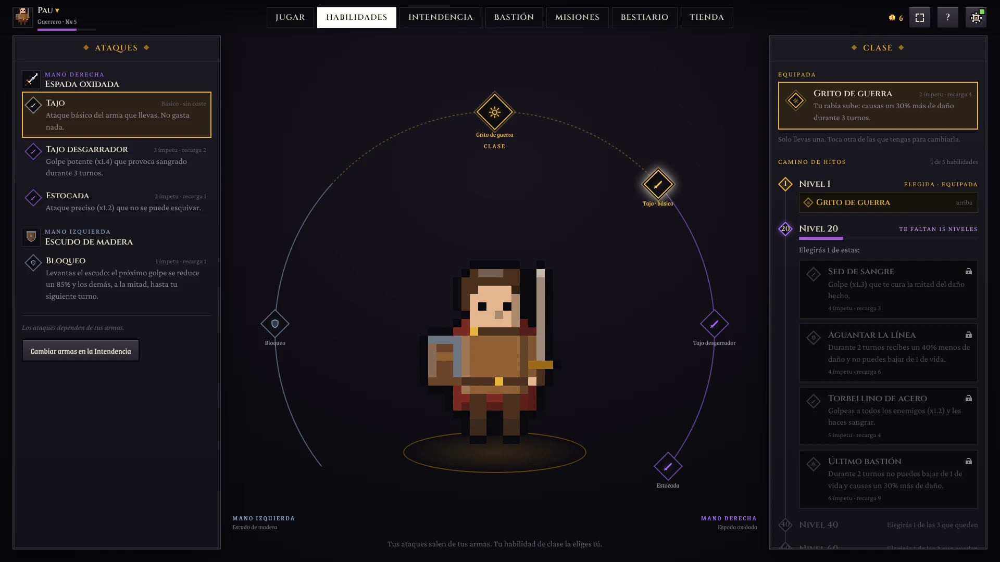
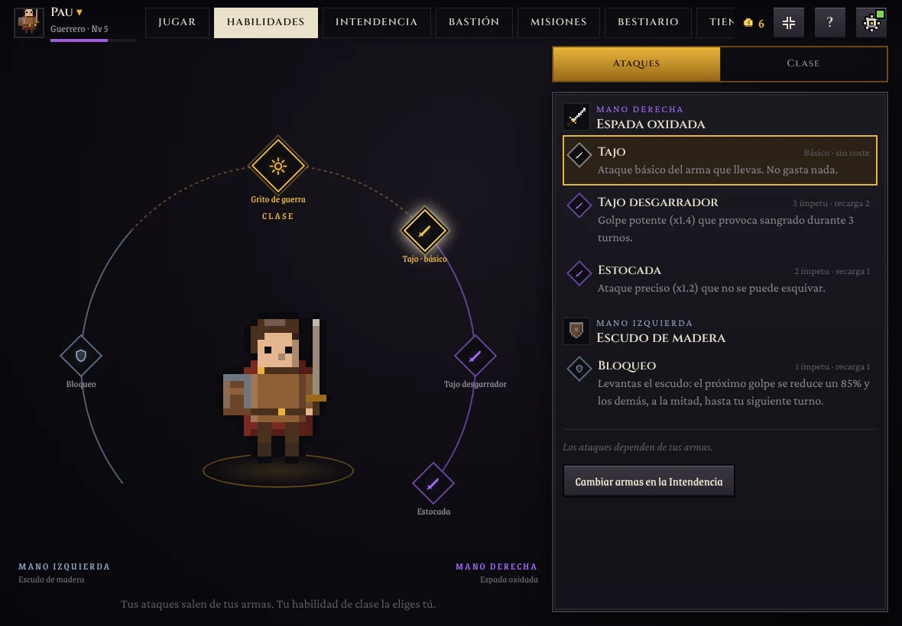
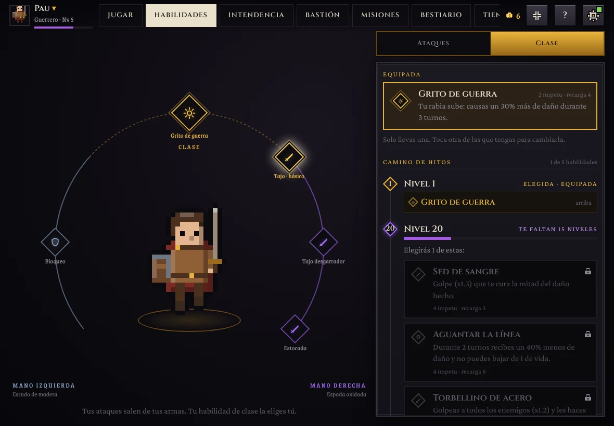
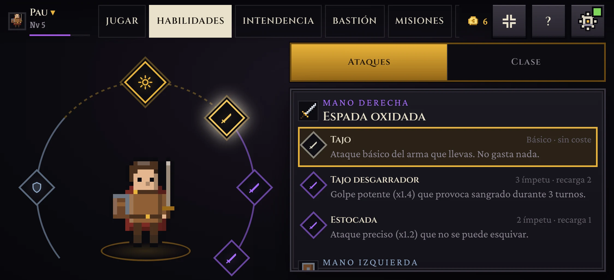
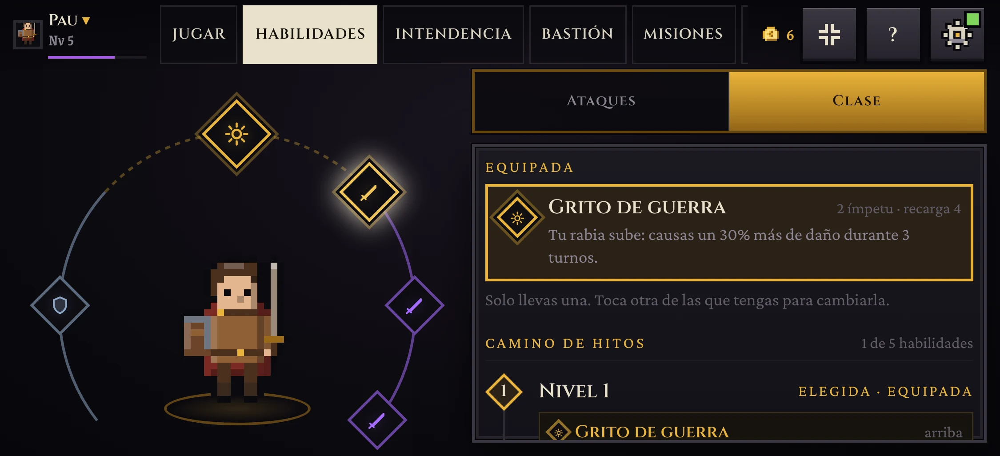
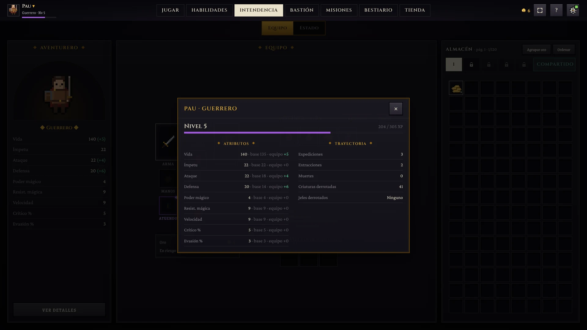
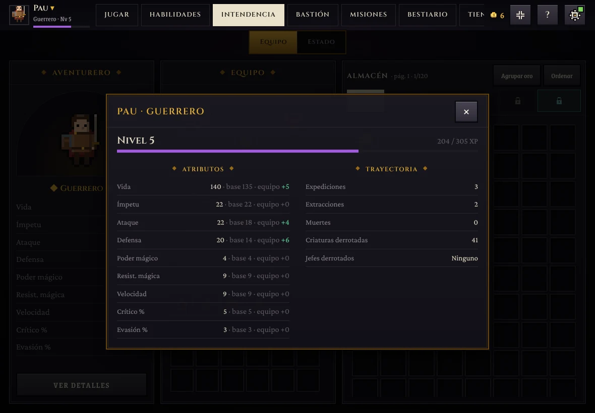
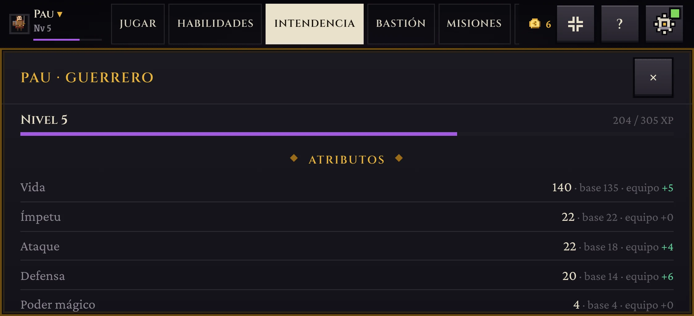

Pestaña Habilidades (antes Personaje) y «Ver detalles»
- La pestaña se llama Habilidades. Fuera la columna Atributos (nivel, atributos, desglose y trayectoria).
- Escritorio: Ataques a la izquierda (mismo ancho que la antigua columna), el personaje en el centro y Clase a la derecha, sin selector. Un ataque elegido se resalta en el panel y en el círculo.
- Punto de corte: en tableta (1180 px) los dos paneles dejarían el círculo en unos 330 px y apretarían el texto, así que desde tableta hacia abajo se usa el selector Ataques · Clase con un solo panel al lado del personaje. Se abre en Clase si hay un hito por elegir.
- «Cambiar armas en la Intendencia» lleva a la pestaña Intendencia.
- Ver detalles (Intendencia → Aventurero; en el móvil, en Estado) abre una ventana: nivel y experiencia, atributos con su desglose («Vida 140 · base 135 · equipo +5», preparado para runas, heridas, comida…) y la trayectoria. Se cierra con ✕, Escape o tocando fuera; en el móvil ocupa toda la pantalla y se desplaza.
Habilidades





Ver detalles


